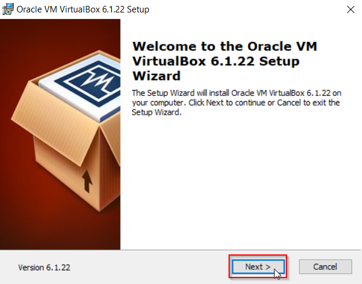

Menginstal Virtualbox
Sabtu, 26 Juni 2021
Intro
Virtual Machine adalah Virtual Environtment yang berfungsi sebagai komputer sistem virtual yang memiliki CPU, memory, network interface, dan storagenya sendiri.
Ada beberapa Virtual Machine yang bisa kita gunakan salah duanya yaitu VMware dan Virtualbox. Kali ini akan menggunakn Virtualbox sebagai contoh.
Yang perlu dipersiapkan
Jika belum mendownload Virtualbox bisa downlaod filenya di https://www.virtualbox.org/wiki/Downloads
Instal

Klik Next.

Jika ingin mengganti letak penginstalan pilih browse dan pilih letaknya. Jika tidak bisa langsung Klik Next
Biarkan default dan klik next
Kemudian klik Yes
Klik Install
Klik Finish
Selesai deh. Kita bisa pakai virtualbox ini untuk menginstal OS lain.
Selamat Mencoba......